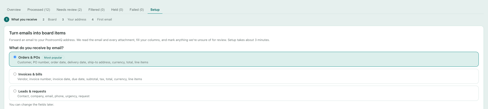
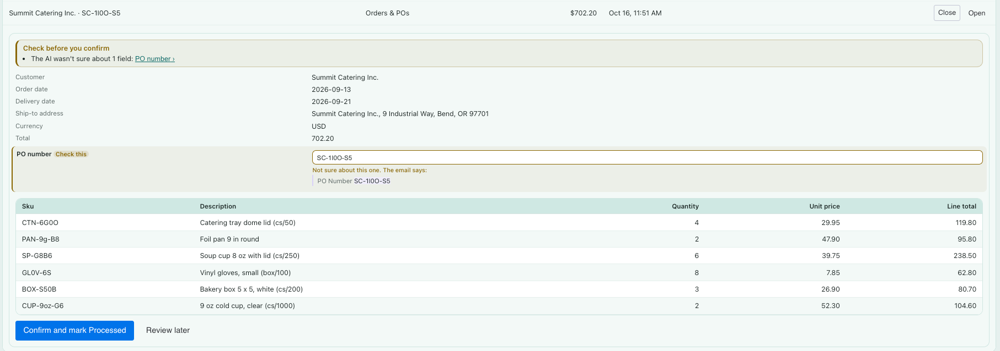
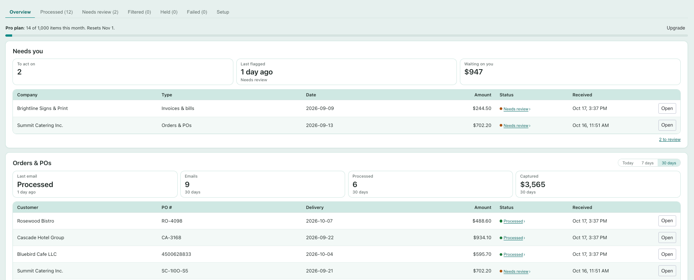

How to use PostroomIQ
PostroomIQ: Email to Board
PostroomIQ gives you an intake email address. Forward an order, invoice, or sales lead to it, and an AI model reads the email and its attachments, fills your columns, and creates an item on your monday board. Anything it isn't sure about waits for a person to review.
1. Add PostroomIQ to a board
- Install PostroomIQ from the monday apps marketplace.
- Open any board, click + next to your board views, choose Apps, and add PostroomIQ.
- Setup starts in the view and takes about 3 minutes.
2. Choose what you receive by email
Pick the email type for this address: Orders & POs, Invoices & bills, or Leads & requests. Each card lists the fields PostroomIQ fills in. You can change the email type later. The first time, tick the box to accept the Terms of Service and Data Processing Addendum, then click Continue.

3. Connect PostroomIQ to monday
PostroomIQ adds items to your boards for you, even when no one is signed in, so monday asks for your OK once. Click Connect to monday and approve in the new tab. That tab then opens your board, and setup carries on in the PostroomIQ view where you started. Each person who sets up an address connects their own monday account once. Items for that address are written with their connection.
4. Choose a board
- Use this board: PostroomIQ matches each field to a column on the board. Check the matches and change any that are wrong. Fields with no matching column are added as new columns, if you leave them checked. Existing items are never touched.
- Create a new board: choose a workspace and a name. PostroomIQ creates a board with a column for each field.
Either way, PostroomIQ adds its own Intake status column. It never uses your board's own Status column, so your automations stay as they are.
5. Get your intake address and set up forwarding
Copy your intake address. Each address belongs to one email type and one board. Then choose how emails will reach it:
- Forward emails as they arrive (recommended): forward any email to the address. Works in every mail app.
- Add it as BCC or CC when you or your team reply or send.
- Forward automatically (optional):
- Gmail: open Settings, then Forwarding and POP/IMAP, then Add a forwarding address, and paste your address. Gmail sends a confirmation code to that address. The code appears right here in the setup step, so you don't have to wait for it. Enter the code in Gmail, then create a filter (for example, from your customers' domains) that forwards to your address.
- Outlook or Microsoft 365: open Settings, then Mail, then Rules, then Add new rule. Choose which emails to forward, then forward them to your address. Many Microsoft 365 companies block automatic forwarding to outside addresses. If your forwards bounce, use forwarding or BCC instead, or copy the ready-made request for your IT admin.
Anyone who knows the address can send email to it, so share it only with the people and systems that need it. Forward or BCC from your own mailbox, so the original email and its attachments stay there.
6. Send your first email
Forward a real email of that type to your address. PostroomIQ watches for it and shows each stage: received, reading attachments, filling columns. When it's done, you see the item it created and the values it filled in. Click Open the item in monday to see it on your board.
- The item's name and columns are filled from the email and its attachments.
- The email's text is posted as an update on the item, with a list of the attached files. Attachments are not uploaded to the item: keep them in your mailbox.
- The Intake status column says whether the item is done or needs review.
- If something looks wrong, click Something's off to fix the values or the column they went to. Future emails follow your fix.
Nothing after 2 minutes? PostroomIQ shows a checklist: the address, your Sent folder, and bounces from blocked forwarding.
What PostroomIQ reads
PostroomIQ reads the email and the files attached to it. Every plan reads the same files.
- Read: the email text; PDFs, including scanned PDFs; photos and screenshots (JPEG, PNG, HEIC, GIF, WebP); faxes (TIFF, the first 5 pages); Excel (.xlsx), CSV and plain text; Word (.docx); forwarded emails (.eml) and ZIP files, with the files inside.
- Not read: older Office files (.xls, .doc) and Outlook .msg files; password-protected PDFs, Word and Excel files; PowerPoint, Apple Numbers and Pages, .rtf, .odt and winmail.dat.
- Blocked: Office files with macros, programs, scripts, calendar invites and contact cards.
- Limits: 25 MB per file. A document over 100 pages isn't read. Each email reads up to 50 pages in total. Spreadsheets and CSV files are read up to 200 line-item rows per email.
If a file isn't read, the email still becomes an item, marked for review, and its update names the file and why. Ask the sender for a PDF, .xlsx or .docx copy and forward that.
7. Review flagged items
After setup, the PostroomIQ view shows your dashboard. The Needs review tab lists items PostroomIQ wasn't sure about, and items from senders it doesn't know yet.
- Click Review to open an item. Each flagged value shows why it was flagged and the passage of the email or attachment it was read from, with the value highlighted.
- Edit any value, then click Confirm and mark Processed. The fix is saved to the item in monday. Confirming an item from a new sender also adds that sender to your approved senders, so their next emails don't need review for that reason.
- Click Reject if the item shouldn't be on the board, and say why: not relevant, wrong board, duplicate, or other. The item stays on the board, marked Rejected.
- Review later keeps the item in the list.

8. Look-alike senders
If an email comes from a sender that looks like one you've approved but isn't (for example, acmecorp.de instead of acmecorp.com), the item goes to review with a warning. An invoice or bank change from a look-alike may be fraud. Check with the company by phone, on a number you already have, before you act. Confirming the item does not add the look-alike sender to your approved senders. If it really is the same company, an account admin can mark it as the same company on the review card.
9. Replies and re-sent emails
- Replies update the item: when you forward, CC, or BCC a reply to an email PostroomIQ already turned into an item, PostroomIQ updates that item instead of making a new one. Changed values are written, the item goes to Needs review, and an update lists each change from old to new. A reply that adds nothing new is posted as an update only. Replies don't count toward your monthly items.
- Warnings make changes proposals: if a reply raises a warning (an unknown or look-alike sender, wording about changed bank details, or text that looks like instructions to the AI), nothing on the item changes: the update lists the proposed changes, and the item goes to Needs review.
- A new order in an old thread (a different PO or invoice number) becomes its own item, with a note pointing to the earlier one.
- Re-sent emails: an email with the same subject and attachments as one already on your board gets its own item marked Possible duplicate. The AI doesn't read it and it doesn't count toward your monthly items. If it isn't a duplicate, choose Process now in the Held tab: PostroomIQ reads it into that item, and it counts as an item. Process all skips possible duplicates.
- Replies are matched by the email's thread headers. Forwarding from Gmail keeps them; some mail apps start a new thread when you forward, and then the reply becomes its own item.
10. Filtered, Held, and Failed
- Filtered: emails that didn't look like the email type for their address. They're on your board, marked Filtered, so nothing is lost. Choose Re-run as another type to read one again as a different type, or Dismiss it. When it looks like a type that another of your addresses receives (for example, an invoice sent to your orders address), it's marked Looks like an invoice: choose Move to Invoices & bills to have it read on that address's board instead.
- Held: emails that were saved but not processed yet, with the reason (for example, a daily limit, or your monthly item allowance). Choose Process now or Process all when you're ready.
- Failed: emails PostroomIQ couldn't process, with the reason. Most are also on your board, marked Failed, with the email's text posted as an update. Choose Process again where it's offered; otherwise forward the email again, or dismiss it.
PostroomIQ keeps access to each email for 30 days, so re-runs and Process now work within that time.
11. Your monthly items
The Overview tab shows your plan and how many items you've used this month. One item is one email read into an item, with up to 5 attachment pages. Each further 5 pages counts as one more. Filtered emails, duplicates, replies added to an item, and failures don't count. The count resets on the 1st of each month (UTC).
- When you're close to the limit, PostroomIQ tells you.
- Over the limit, new emails still reach your board, marked Over limit, with the email posted as an update. The AI doesn't read them, so their fields are empty. They're listed in the Held tab.
- After you upgrade, or after the count resets, choose Process now in Held. PostroomIQ reads the email and fills in that same item.

12. Plans
PostroomIQ has a Free plan and paid plans: Starter, Pro, and Business. Plans differ in how many items they include each month. Every plan reads the same files (see What PostroomIQ reads). Current plans and prices are shown in monday's plan selection. Paid plans include a 14-day free trial.
13. Your data
- PostroomIQ sees only the emails you send or forward to its addresses. It never connects to your mailbox.
- Emails are received by our email provider, read by Anthropic's Claude AI models, and processed on monday.com's own hosting in the United States. Your data is not used to train AI models.
- We store the values read from each email and a record of how it was processed, not a copy of the email. Processing records are deleted after 12 months.
- Bank account and routing numbers are never extracted, and tax ID numbers are kept to their last 4 digits.
- Uninstalling PostroomIQ deletes what we store for your account. Items already on your boards stay.
Full details are in our Privacy Policy and Terms of Service, linked from PostroomIQ's page in the monday apps marketplace.
Need help?
Email support@alpenglowsoftware.com. We respond within 2 business days.